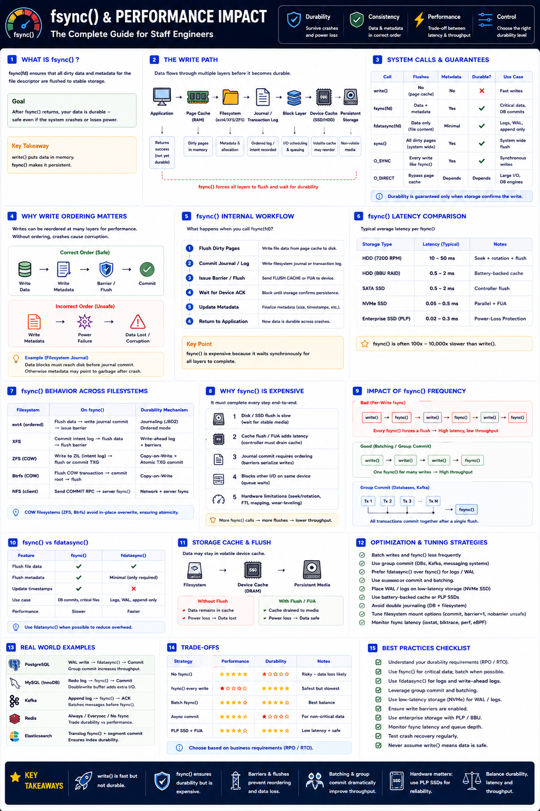

fsync() & Performance ImpactDurability vs throughput trade-offs — Staff Engineer level
The Big Picture
write() does not save your data. It only copies data into the kernel page cache. fsync() forces all pending writes to become durable — but it is often 100–10,000× slower than write().
write() vs fsync() vs fdatasync()
| Operation | What Happens | Durable? | Speed |
|---|---|---|---|
write() | Copies data to Page Cache only | ❌ No | Fastest |
fsync() | Flushes data + metadata to storage | ✅ Yes | Slowest |
fdatasync() | Flushes data, minimal metadata | ✅ Yes | Medium |
O_SYNC | Every write is synchronous | ✅ Yes | Slowest |
O_DIRECT | Bypasses page cache entirely | ⚠ Partial | Fast (no cache) |
Why fsync() Is Expensive
Unlike write(), fsync() blocks synchronously through every storage layer:
Latency Comparison
| Operation | Typical Latency |
|---|---|
| Memory copy | <1 µs |
write() | 1–10 µs |
| Page cache flush | 100–500 µs |
fsync() — NVMe SSD | 0.05–0.5 ms |
fsync() — SATA SSD | 0.5–2 ms |
fsync() — HDD | 5–50 ms |
fsync() on HDD is up to 50,000× slower than a memory copy. Hardware choice is the biggest lever.
fsync() Internals by Filesystem
ext4
XFS
ZFS
fsync() vs fdatasync()
| Feature | fsync() | fdatasync() |
|---|---|---|
| File Data | ✅ | ✅ |
| All Metadata | ✅ | ❌ |
| Timestamps (atime/mtime) | ✅ | Usually not |
| Performance | Slower | Faster |
Use fdatasync() for WALs, logs, and append-only files — it avoids unnecessary metadata I/O while still guaranteeing data durability.
Batching & Group Commit — The Key Optimization
Worst: one fsync per write
Better: group commit
Group commit is used by PostgreSQL, MySQL InnoDB, Kafka, and RocksDB — single flush covers many transactions.
Device Cache & Hardware Impact
| Device | Typical fsync Latency | PLP? |
|---|---|---|
| HDD | 10–50 ms | ❌ No |
| SATA SSD | 0.5–2 ms | ❌ Usually not |
| NVMe SSD | 0.05–0.5 ms | ⚠ Varies |
| Enterprise SSD (PLP) | 0.02–0.2 ms | ✅ Yes |
PLP (Power Loss Protection) with supercapacitors lets the SSD flush its cache on power loss — fsync() can be faster because hardware guarantees durability.
Real-World Examples
| System | Strategy | Reason |
|---|---|---|
| PostgreSQL | fdatasync() + group commit on WAL | Avoid metadata flush, batch many TXNs |
| MySQL InnoDB | Group commit on redo log | High TPS without per-write flush |
| Kafka | Batched append + configurable flush | Throughput vs durability via acks |
| Redis | always / everysec / never | User chooses durability SLA |
| RocksDB | WAL + group commit | LSM-tree append-heavy writes |
Performance vs Durability Trade-offs
| Strategy | Performance | Durability |
|---|---|---|
No fsync() | ⭐⭐⭐⭐⭐ | ⭐ (crash = data loss) |
| Async / periodic flush | ⭐⭐⭐⭐⭐ | ⭐⭐ (some loss) |
| Batch / group commit | ⭐⭐⭐⭐ | ⭐⭐⭐⭐ |
fsync() every write | ⭐ | ⭐⭐⭐⭐⭐ |
Staff Engineer Thinking
Junior
Why is fsync slow?
Senior
Can we reduce fsync frequency?
Staff asks
fdatasync() instead?Production Failure Scenarios
Lost Transactions After Crash
Cause: Application used only write() · Fix: Call fsync() before acknowledging commit
Low TPS on Database
Cause: One fsync() per transaction · Fix: Enable group commit
High fsync Latency
Cause: WAL on consumer HDD or SATA SSD · Fix: Move WAL to dedicated NVMe SSD
Double Journaling Overhead
Cause: DB WAL + ext4 journaling on same data · Fix: Tune filesystem or use O_DIRECT for WAL
Power Failure Data Loss on SSD
Cause: Consumer SSD volatile cache · Fix: Enterprise SSD with PLP supercapacitor
Staff Engineer Decision Framework
| Requirement | Recommended Strategy |
|---|---|
| Banking / financial | fsync() every commit + PLP SSD |
| PostgreSQL WAL | fdatasync() + group commit |
| Kafka throughput | Batched append + tunable acks |
| Metrics / logs | Async flush (some loss acceptable) |
| Temp / scratch files | No fsync() |
| Enterprise storage | PLP SSD + barriers (may skip explicit flush) |
Production Debugging Checklist
fsync() latency: fio --fsync=1 --rw=write/proc/meminfotune2fs -l)iostat -x 1Key Takeaways
